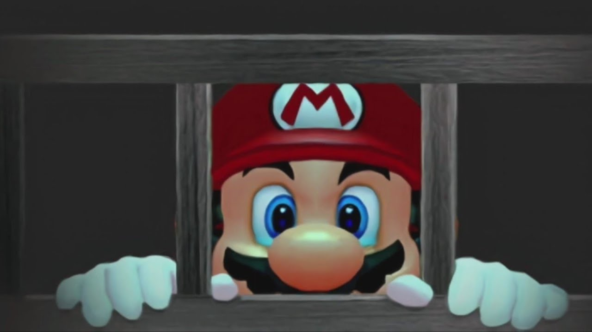

Mario, Princess Peach en Toadsworth reizen naar Isle Delfino voor een welverdiende vakantie. Ze zijn enthousiast om te genieten van de zon en de schoonheid van het eiland. Mario en zijn vrienden worden begroet door de vriendelijke inwoners van het eiland, de Piantas en Nokis. Maar al snel worden ze beschuldigd van het vervuilen van het eiland met een mysterieuze inkt. Terwijl ze het eiland verkennen, ziet Mario een schaduwachtige figuur die het eiland verder beschadigt. De bewoners zijn hier woest over, en sluiten Mario op.  Als Mario zijn reputatie later besluit op te bouwen, besluit hij om het eiland schoon te maken. Hiervoor krijgt hij een apparaat, genaamd FLUDD, en apparaat wat water spuit, zo kan Mario de boel opruimen. Zo komt Mario ook verschillende levels tegen met verschillende uitdagingen. Als Mario later weer het schaduwachtige figuur tegenkomt, ziet hij eindelijk wat het is, Shadow Mario. Shadow Mario heeft ervoor gezorgd dat het eiland onder de inkt zit. Later in het spel word het pas echt duidelijk wie er achter deze waanzin zit, het blijkt dat Shadow Mario, Bowser Jr blijkt te zijn, de zoon van Bowser. Bowser Jr denkt dus dat Peach zijn moeder is, en dat Mario haar ontvoerd heeft. Ook zegt Bowser Jr dat Bowser op het moment op Isle Delfino is, om Peach te ontvoeren! Het blijkt dus dat het plan van Bowser gewerkt heeft, om de inkt en Shadow Mario als valstrik te gebruiken. In het laatse level (Corona Mountain), ga je de stijd met Bowser en Bowser Jr om Peach te redden. Als Mario Bowser en Bowser Jr heeft verslagen en Peach heeft bevrijd, gaan ze terug naar Isle Delfino, waar ze samen met de bewoners de zon terug brengen. Bowser en Bowser Jr zitten op een eiland in de oceaan, Bowser Jr praat over zijn gevoelens over zijn moeder, terwijl Bowser zegt dat ze altijd nog een kans hebben. En zo kwam Mario Sunshine tot een einde.